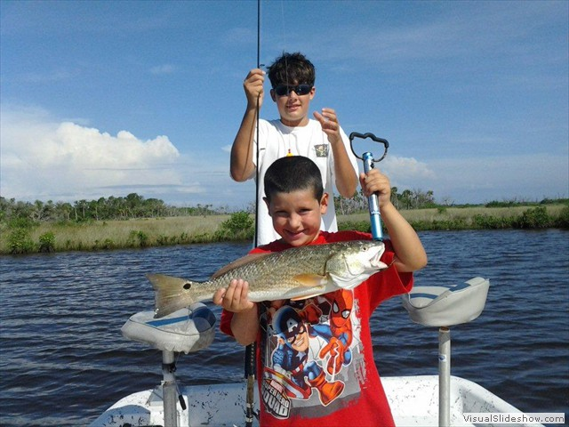
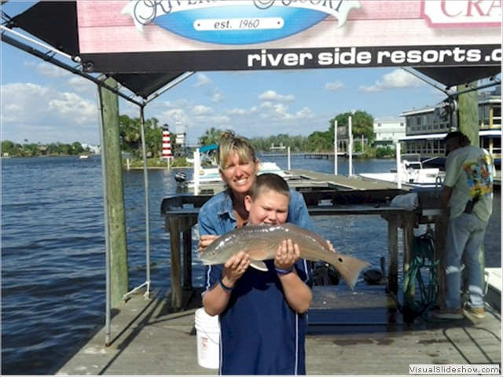
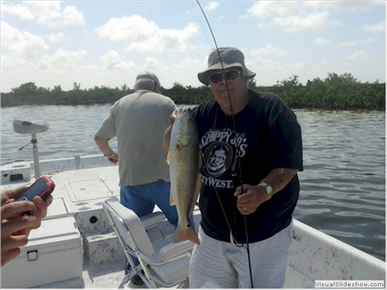
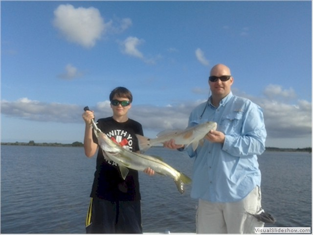
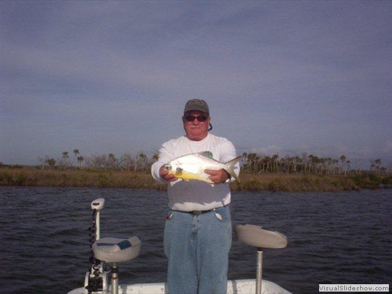
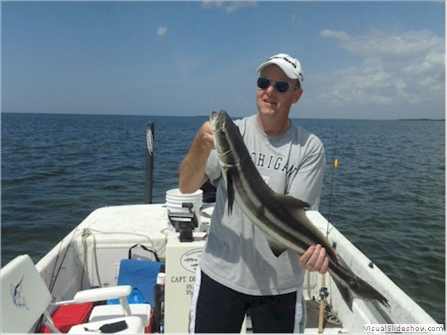
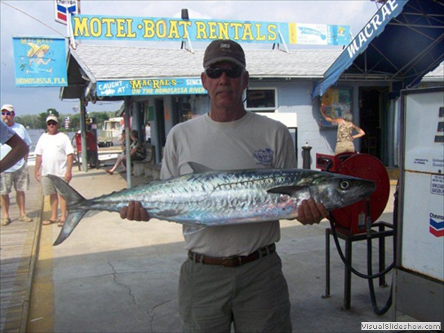
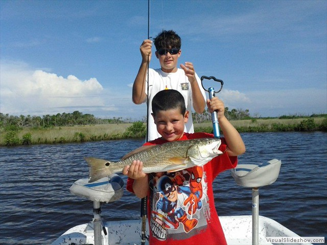
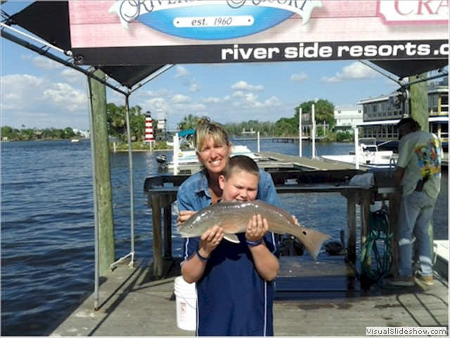
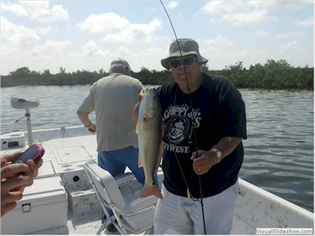
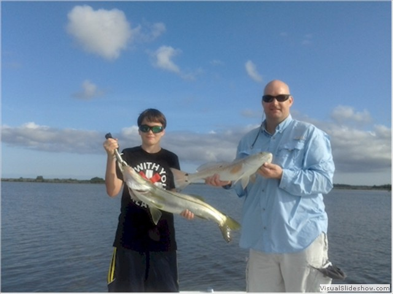
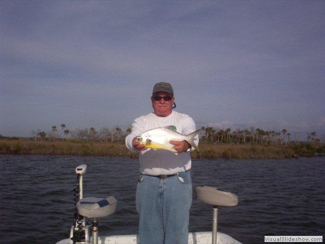
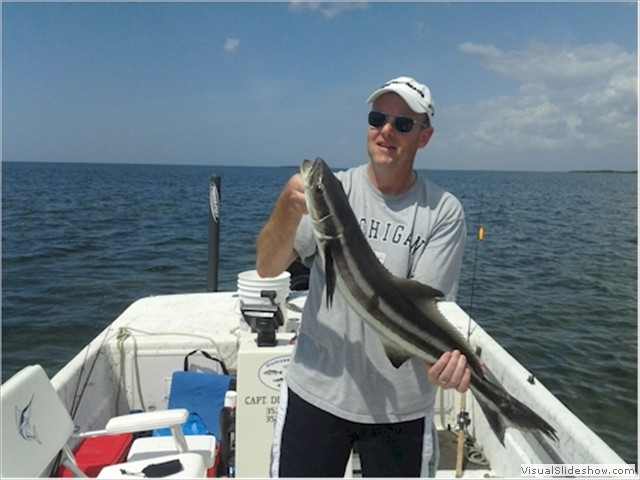
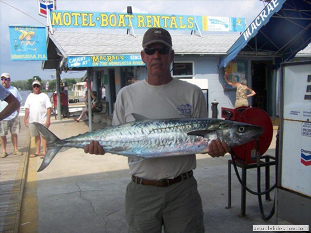
About the Captain
Homosassa Fishing with Capt. Duane Tibbetts
07-04-2019
Florida flats fishing guide specializing in catching redfish, trout, grouper and tarpon. Join me for an incredible day of fishing on the flats of Homosassa!
Hi, I’m Captain Duane Tibbets! I’m a native to Citrus County Florida and I grew up fishing the local lakes, phosphate pits and ponds. Back in the early 70’s, I married a native Homosassian. I relocated to Homosassa and eventually caught all of the bass. So I directed my attention to saltwater fishing. My father-in-law was a native to Old Homosassa and an original member of the Homosassa Guides Association from 1950. I quickly mastered trout and redfish 101, so my father-in-law suggested that I join The Homosassa Guides Association. With his sponsorship, I joined the association in 1983 and eventually served as President in 1991.
Homosassa is located on the West Coast of Florida, about 70 miles north of Tampa. Aptly named “The Nature Coast,” this area of Florida is teeming with wildlife and the fishing is second to none!
Our beloved Citrus County boasts of seven rivers, some of which are spring-fed. Attracted by these warm waters, West Indian Manatees make their home here in winter. Likewise, many species of fresh and saltwater fishes inhabit the warm waters of these rivers during the winter months. There is plenty of bird life to see, like bald eagles and ospreys. Dolphins are spotted daily, and make for an entertaining side show. The area is pleasantly landscaped with sable palms and vast marsh grasses. The Homosassa River is lined with rustic homes and great oaks laden with Spanish moss. It gives you the feeling of “Old Florida,” and I think the natural scenery here is part of what keeps folks coming back to Homosassa year after year.
As far as the fishing goes, you can catch many types of fish year-round. There is a healthy fishery of speckled trout and redfish. These two species are what folks fish for most frequently in Homosassa. Pelagic species such as Spanish mackerel and bluefish sweeten the pot during the Spring and Fall migrations. Rock piles full of gag grouper, grunts, and sea bass dot the gulf’s bottom, providing fun for all ages. I like to match the rod to the fish using light spinning tackle or bait-casting gear for the most fun. See the fish we catch and the seasons that are best for each species.